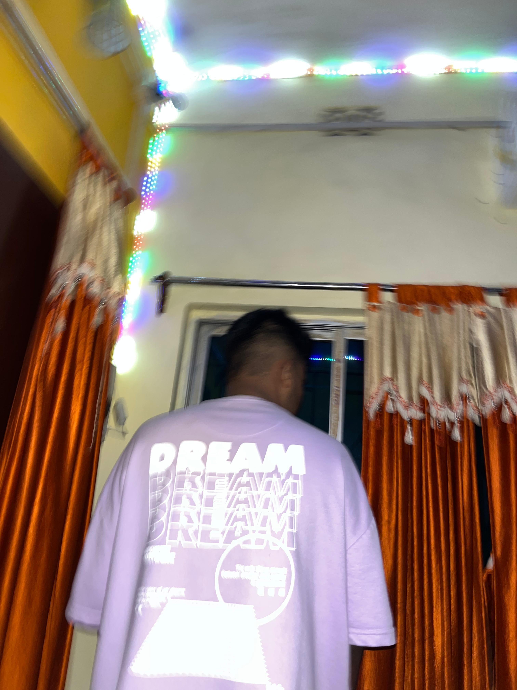

Music

Black & white vibes, room silent but the beat speaks louder than ever. boffi tee hanging long, I bite it with my mouth, pose locked, attitude on point. Shadows play on the walls, every note hitting like it’s made for this exact moment. Rhythm flows through the air, syncing with every subtle move I make. Music isn’t background — it’s a pulse, a companion to this frame. Each beat tells a story, each pause adds tension, every glance adds character. This isn’t just a photo, it’s a mood captured in monochrome and sound. Style, sound, and attitude collide, creating a moment that lingers even after it ends.
Music 1

Swag Mode On
I threw on my favorite tee, pulled the collar up, and walked out like the world was my runway. The shirt fits like a memory — worn-in, soft, and full of stories. Music in my ears, shoulders relaxed, steps steady — everything slows down to the rhythm of confidence. There’s a quiet kind of swagger that isn’t loud; it’s calm, deliberate, and impossible to fake. People glance, some smile, some wonder, but I’m just here — present, loud in my silence, proud of the little rebellions that stitched this look together. Tonight is for small victories: a cup of late coffee, the right playlist, a hoodie tossed on the chair — and this tee that reminds me who I am when the light is mine. Keep the headphone beat steady and let the world watch how you move.

Dark Night - hart Error!
I pulled on my favorite tee, stepped into the night and let the city lights do the talking. The shirt felt familiar — soft at the seams, carrying memories of midnight drives and quiet victories. With headphones snug and the bass low, every step felt confident, every corner felt like mine. We don't need a crowd to feel loud; sometimes silence and a steady beat are all the armor you need. Tonight was for small rebellions: a tireless playlist, a cup gone cold, and the slow swagger of someone who knows their path. Keep your chin up, walk steady, and let your mood do the talking.
My Moment
Here, I stand with my hands open wide, embracing the night, the silence, and the subtle rhythm of life. Each step I take feels deliberate, each glance reflective. This moment is mine — no distractions, no rush, just the calm assurance that even in chaos, there is space for clarity. The city hums quietly, the lights flicker, and I feel grounded, purposeful, alive.